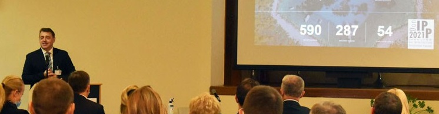

Vijesti

Održan 12. Dan infrastruktura prostornih podataka 2021.
Dvanaesta konferencija posvećena infrastrukturama prostornih podataka održana je 20. listopada 2021. godine...Vidi više ...
Održani sastanci sa predstavnicima JLS-a na temu „Uspostave e-registra zgrada“
Dana 12. i 13. listopada 2021. godine održani su sastanci sa predstavnicima gradova i općina sa područja Varaždinske županije... Vidi više ...
Objavljen Višegodišnji program katastarskih izmjera građevinskih područja za razdoblje 2021. – 2030.
U „Narodnim novinama“ broj 109/2021 od 8. listopada 2021. godine objavljen je Višegodišnji program katastarskih izmjera građevinskih područja za razdoblje 2021. – 2030. Vidi više ...